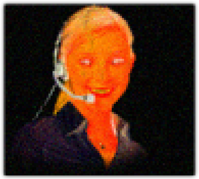

Şık tasarımlar, şık kıyafetler, şık arabalar, şık yüzler, şık şehirler, lüks bir güzelliği ifade eden "şık" kelimesi; {yazmak bile boktan bir duygu}güleryüz, garanti, memnuniyet, güvenlik; görünüş, beden, davranışlar; teknoloji, moda, gazete, kültür, üniversite, lise, iş.{/nbr}
Bu sayfanın kaynak kodu kendisinden daha okunaklı bu arada. CTRL+U. Mac'çiler için kısayol tuşu vermiyorum, kendileri b{u/i}ls{u/i}n.
Mevcut durumla mutlu olmak sadece Buddha'ya ve alkollülere, uyuşmuşlara has bir özellik. Tüm bir şehir feyk atıyor.
Olayın buradan sonrası çelişkili görünmek zorunda kalıyor haliyle. N'apalım. Parayla yaptığı işi büyük mutlulukla yapanlar tecavüzü tamamen unutmuşlar. Tecavüz önemli, aklın bir köşesinde durmalı; gerisi hayatta kalabilmek. Parayla yaptığı iş sırasında büyüklenenler ruhlarına girip çıkan objeyi kendi objesi sanıyor.
Ben mutsuzum. Etrafımdaki maddi imkanlar şu ankinin 2^16 katı fazla olsa yine de mutsuz olacağım. Tatminsiz diyecekler.
{%verbakiim%}
Tatmini tecavüzde arıyor olsam tamam. Ama yhanny, öyle diil...
Yetişkinlerin dünyası tecavüz lunaparkı. Köşe başı palyaço falan. Sürekli boş boş laflarla kendini ispatlamaya çalışacaksın, prensipli ve olgun bir herif olduğunu ifade edip duracaksın ki, "bizim musdaa ii çocukmuş" diyip lunaparklarına kabul etsinler.
Lunapark çocuklar için çok eğlenceli bir yerdir.
Detaylar çok gerçekçi, düşünüyormuş gibi falan da davranıyorlar; bir yandan şu dönen atlarla dıgıdık dıgıdık ilerliyor falan. Güneş gözlüğünü takıp kendisi gibi lunaparkta hoş vakit geçirenlere hava atanlar var çokça.
Apuaqark